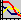

To start the solution process, click the Solve icon. The Profiles window displays the solution convergence progress.
When called by the activation of the solver, the Profiles window displays a convergence plot showing the numerical errors in the calculated flow and temperature distributions as the solution proceeds. This is in the form of a plot of residual error against iteration number for steady solutions. This is repeated for each time-step for transient (time-dependent) solutions. If monitor points (virtual probes for all the solved variables) are present, then a monitor point plot is also displayed.
After solution, the Profiles window can be called at any time to display the solution plots by clicking the Launch Profiles icon  in any application window.
For further information, see Solution Monitoring and Profile Plots in the Simcenter Flotherm User Guide.